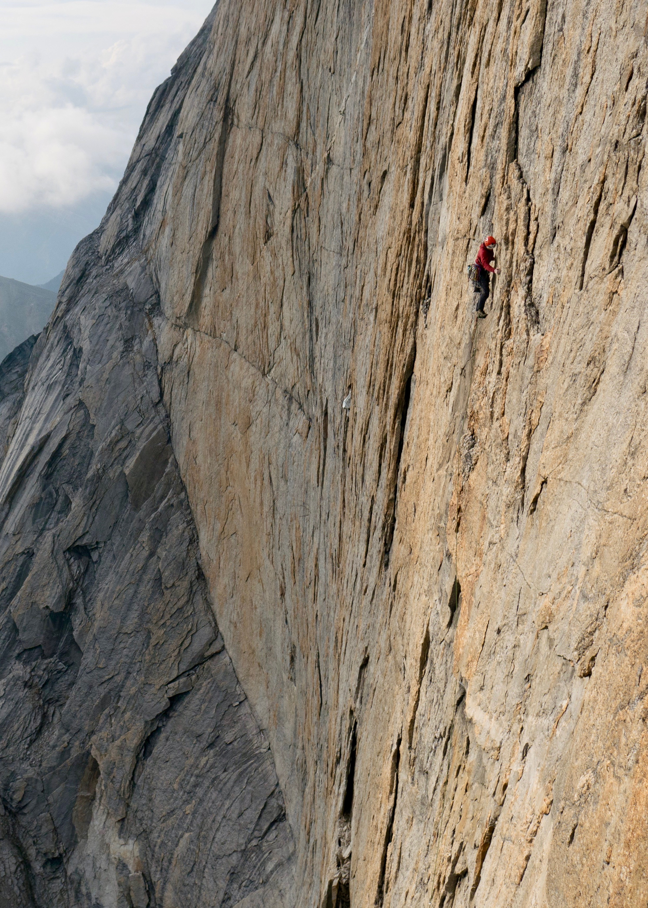

C L I M B I N G
I enjoy climbing in all forms and have visitedmany of the premier climbing destinations in North America. I topped out my first big wall in 2013 after spending fifteen hours on the Nose of El Capitan. In 2017, David Bain, Gabriel Boning, Zebediah Engberg, and I completed the first ascent of the West Face of Xanadu via our route Golden Petals. Zeb wrote a trip report appearing in the 2018 AAJ.

C O O K I N G
Cooking is another of my primary delights. While I dabble in a variety of fermentations, my main fascination is with bread. I maintain a symbiotic relationship with a sourdough starter named Bartholomew. We feed off of each other and every once in a while, the results are tangy, delicious, and uplifting. My favorite loaves are rosemary olive, toasted sesame seed, & rye.